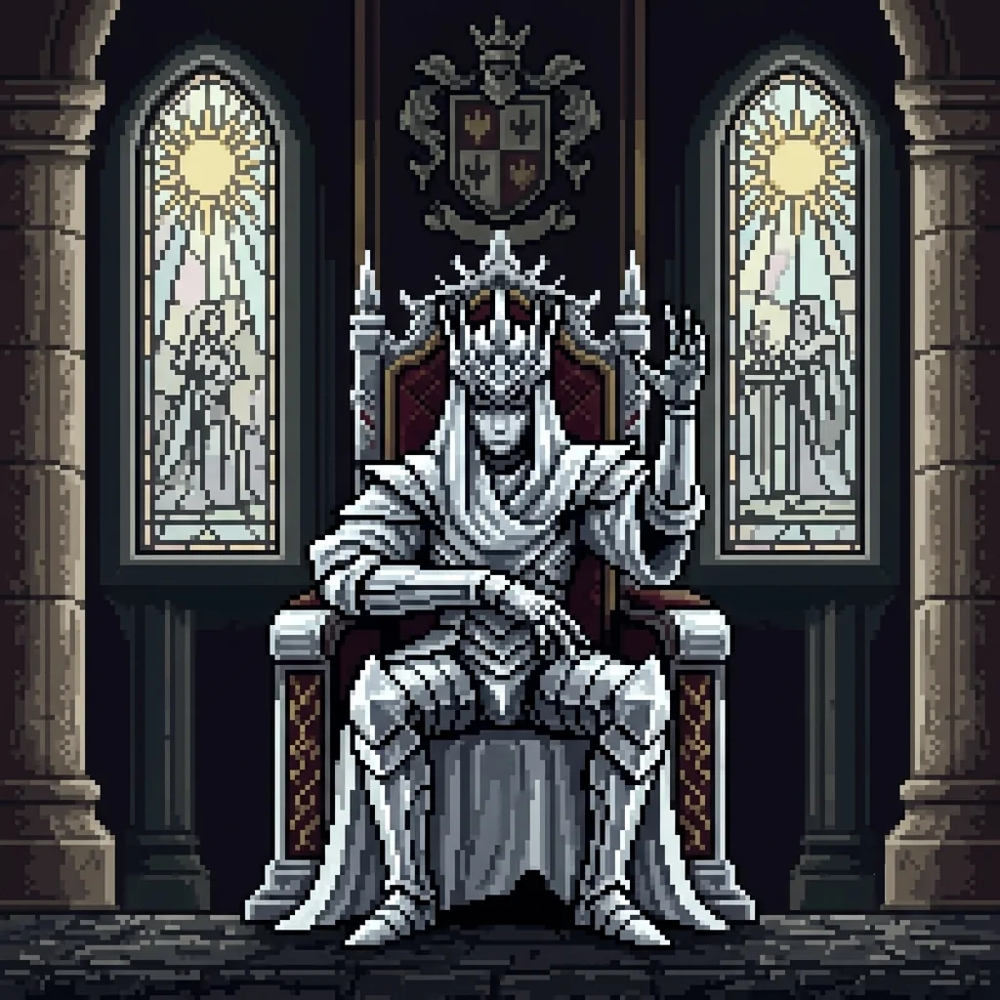
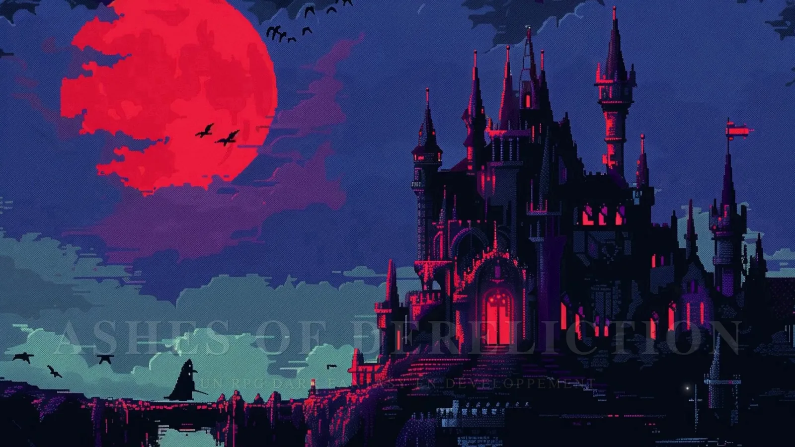
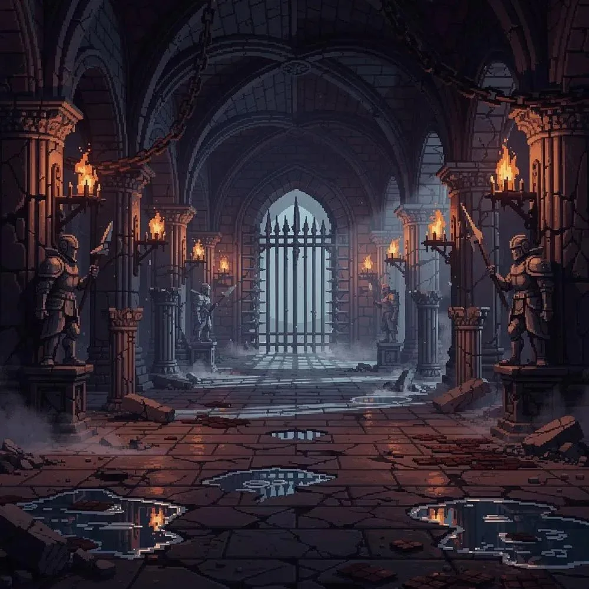
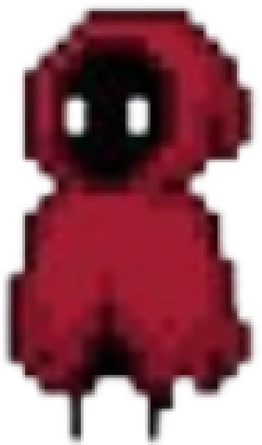
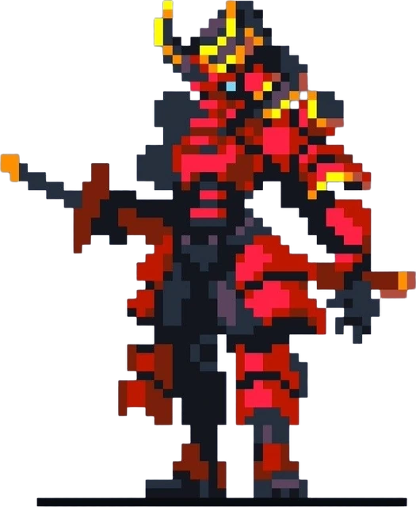
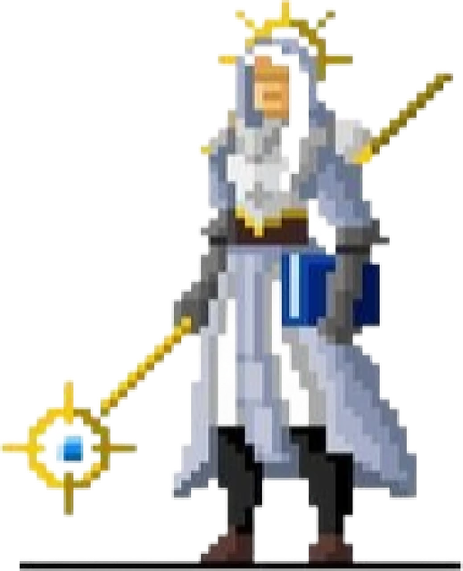
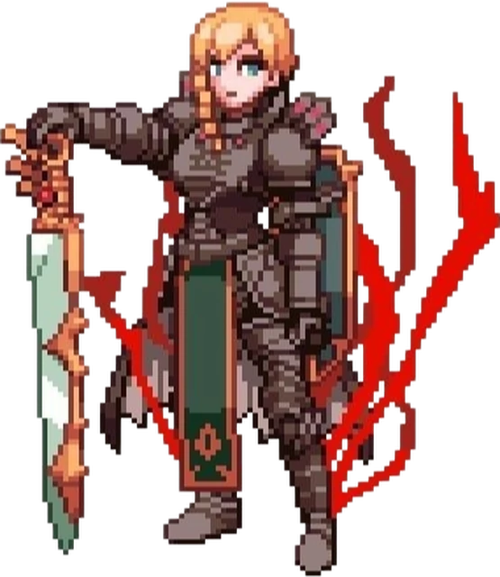

Le roi sans visage
Il gouverne dans l’ombre. Nul ne peut décrire ses traits, mais ses décisions font trembler tout un empire.
RPG dark fantasy en développement
Quand les couronnes brûlent, les cendres se souviennent.
Deux empires. Une guerre qui dévore les royaumes. Et, au sommet du pouvoir, un souverain dont personne n’a jamais vu le visage.
Version de test disponible
59 secondes d’images tirées du jeu en développement.

« Un trône peut survivre à un roi.
Un empire, rarement à ses secrets. »
La guerre ne se gagne pas seulement avec des lames. Elle se gagne avec des serments, des mensonges et le prix que chacun est prêt à payer.

Il gouverne dans l’ombre. Nul ne peut décrire ses traits, mais ses décisions font trembler tout un empire.
Deux puissances se disputent terres, héritages et avenir. Dans cette guerre, chaque victoire nourrit une nouvelle rancune.

Les flammes consument les cités, pas les vérités. Sous les ruines sommeillent les récits que le pouvoir voudrait effacer.
Chacun a sa façon de combattre. Voici leurs statistiques dans la version de test actuelle : elles évolueront avec le développement.

Le plus fragile, mais son ultime frappe ×1,5.

Le plus solide : 30 points de vie et la meilleure défense.

Le plus précis : 15 % de chances de coup critique.

La plus offensive : la meilleure attaque et un ultime ×2.
Des captures de la version de test. Cliquez sur une image pour l’agrandir.
Le jeu est en construction : voici ce que vous pouvez déjà essayer.
Attaque légère, attaque lourde ou ultime. La jauge d’ultime se remplit au fil du combat.
Parcourez un village, entrez dans les maisons et croisez les ennemis qui rôdent sur les routes.
Discutez avec les marchands, achetez de l’équipement et gérez votre sac.
Mage, Bismark, Elio et Naerys, chacun avec ses statistiques et son style de combat.
Gardez plusieurs parties en parallèle et reprenez où vous vous étiez arrêté.
Le jeu commence par une scène qui pose le décor de la guerre.
Quatre nations, quatre étendards. Reconnaîtrez-vous celui de votre camp ?
Hexa Studio est né d’une passion commune pour les univers riches, les histoires qui laissent des traces et les jeux que l’on crée d’abord par envie. Ashes of Dereliction est encore en développement : chaque étape est une nouvelle pierre posée dans cet empire.
Quatre passionnés, quatre rôles complémentaires, une seule ambition : donner vie à notre univers.
Structure le projet, façonne ses systèmes et veille à ce que la vision avance.
ArchitecteVeille sur la mémoire du monde, ses chroniques et la cohérence de son histoire.
MémoireParticipe à l’écriture et enrichit les récits qui donnent une âme à cet univers.
PlumeContribue à transformer les idées et les mécaniques en une expérience jouable.
ForgeLe jeu évolue encore. Rejoignez l’aventure, découvrez les versions disponibles et accompagnez Hexa Studio dans la construction de son monde.